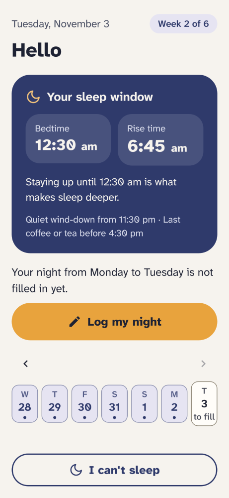

Sleep again with the recommended method for insomnia
Sommelle guides you for seven weeks (one observation week, then six weeks of program) with cognitive behavioral therapy for insomnia. Free, no account, and your data stays on your phone.
Available as an APK on GitHub. iPhone version in development; Google Play and App Store currently in testing.


Why Sommelle
Cognitive behavioral therapy for insomnia (CBT-I) is the recommended first-line treatment, but it remains hard to access: few trained practitioners, long waits, and a cost often paid by the patient. Sommelle aims to help as many people as possible, because everyone deserves help to sleep better. The app is free, open source and collects no data. It does not replace a doctor, but it lets you get started.
The recommended treatment
Cognitive behavioral therapy for insomnia is the first treatment advised by European and American guidelines, before sleeping pills.
Designed for everyone
Large text, big buttons, no jargon, and a diary you can fill in in a few moments, even half awake.
Your data stays with you
No account, no ads, nothing is sent. The code is open: anyone can check it.
How it works
The program follows the steps of the therapy, one by one, at the pace of one small action a day.
A few questions and a clear roadmap
Two to three minutes to check that the 6-week program is right for you, understand its three stages, and adapt it if needed.
An observation week (7 nights)
Each morning, you log your night without changing your schedule yet. An estimate is enough: no need to check the time at night.
Your sleep window (6 weeks)
Sommelle suggests a bedtime and a rise time to consolidate sleep, then expands your window by 15 minutes a week as sleep becomes more continuous, with personalized evening landmarks (a quiet wind-down before bed, a cut-off time for coffee or tea).
Support at night, in the evening and over time
If you can't sleep, a dark clock-free screen reminds you what to do and offers a gentle 20-minute chime. In the evening, relaxation exercises, the evening notepad, bedroom habit commitments and the relapse-prevention guide can be used or listened to with your eyes closed.
Who it is for
Sommelle is for you if
- you struggle to fall asleep, or wake up during the night or too early;
- it has been going on for weeks and weighs on your days;
- you are an adult.
Talk to your doctor instead if
- you snore loudly with pauses in breathing;
- you fall asleep without meaning to during the day;
- you work nights or shifts.
The starting questionnaire spots these situations and points you in the right direction.
Sommelle does not replace medical advice. It is a self-help and education tool, not a medical device. If you have doubts about your sleep or your health, talk to a health professional.
Frequently asked questions
Is it really free?
Yes, completely: no subscription, no in-app purchases, no ads. Sommelle is free software under the MPL-2.0 license.
What happens to my data?
It stays on your phone. Sommelle requires no account and has no Internet access. They are excluded from Android cloud backup, and you can move them to a new phone yourself.
How much time does it take?
A few moments each morning for the diary, and a few minutes a week for the review. The program lasts seven weeks: one observation week, then six weeks of program.
What about iPhone?
The iPhone (iOS) version is in development and currently in testing on the App Store (TestFlight).
How to install Sommelle?
Sommelle is in testing on Google Play and the App Store; public releases will follow. Meanwhile, you can download the signed APK from GitHub.
I am a doctor or pharmacist, how can I recommend it?
Everything is on the health professionals page, with a sheet to print (in French).
From the same studio (Pilmil Studio)
Five other free, open-source Android apps with no Internet access.
Lunaison: private menstrual cycle tracking
Menstrual cycle tracking, honest forecasts, referenced medical guides, consultation summary and offline partner sharing.
Respire: a pause before opening on autopilot
A short breathing pause before endless-feed apps (especially helpful in the evening before bed) and a Reels & Shorts filter.
Sauve: first-aid guide offline
Offline emergency first-aid reference, interactive CPR metronome and voice-guided prompts.
Sillon: vegetable garden and leaf diagnosis
Sowing calendar adapted to local frost dates, garden layout planning and on-device diagnosis of leaf diseases and pests.
Fredonne: melody entry and transposition
Single-voice melody input on keyboard or staff, instant MIDI playback, automatic transposition (B♭, E♭, F) and MusicXML/MIDI import and export.
Suggest an offline app idea
Missing an everyday tool with no ads, no account and no Internet access? Write to pilmil.studio@proton.me describing the concrete need, what existing apps get wrong, and reliable references if available.